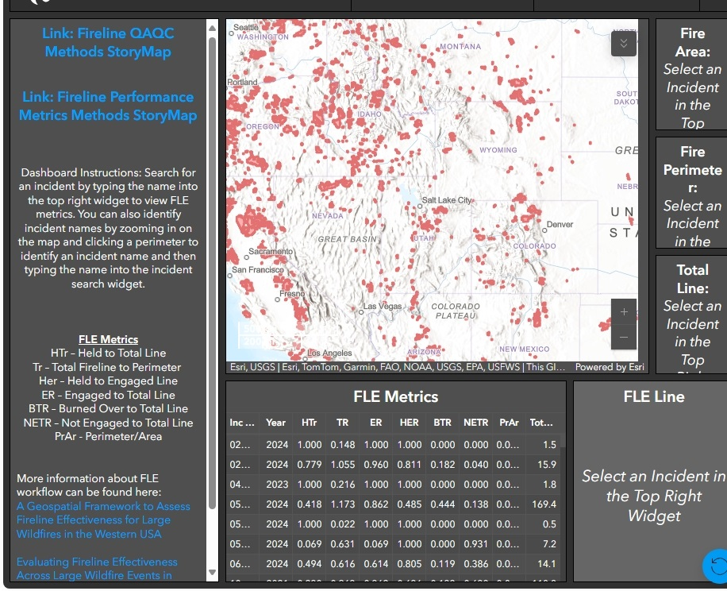

Raster Tools is a python package that facilitates a wide range of spatial, statistical, machine learning analyses using delayed and automated parallel processing. Our library focuses on significantly reducing processing time and storage space associated with analyzing large spatial datasets while also introducing new spatial, statistical, machine learning concepts into an easy-to-use python based API.
Raster Tools (GitHub)

Wildland fire response is resource-intensive, high-risk, and increasingly complex. To improve outcomes,
we need a better understanding of what has worked — and why. The Human Dimensions
WRMS team work helps meet this need by analyzing where firelines successfully held, burned over,
or were not engaged across hundreds of large wildfires. This evidence-based approach provides the
Forest Service with actionable insights to improve strategic planning, firefighter safety, and real-time decision-making.
Fireline Effectiveness Analysis